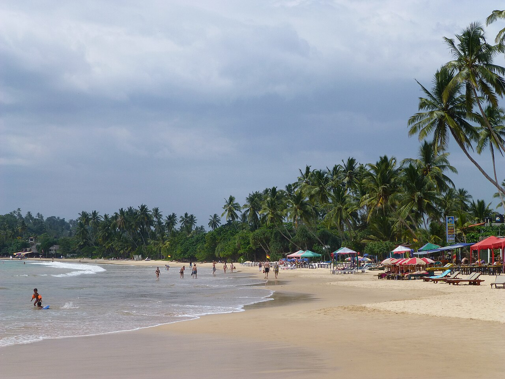

South-west monsoon
About May to September
Brings rain to the west and south coasts and the hills. This is when the east coast, Trincomalee and the north are at their best.

Two monsoons hit opposite sides of the island, so somewhere is always dry. Pick your month to see where.
Best Fine Rainy or closed. A general guide only; weather changes year to year.
Rain usually comes in short, heavy afternoon showers rather than all-day downpours, so a “rainy” month is rarely a lost one.
About May to September
Brings rain to the west and south coasts and the hills. This is when the east coast, Trincomalee and the north are at their best.
About November to February
Brings rain to the north and east. The west and south coasts, Galle, Mirissa and the hills are dry and clear.
October, and sometimes April
Storms can come anywhere on the island for a few weeks. Prices are lower and it’s quieter everywhere.
Dates move a little each year. Ask us and we’ll check before you book.
0 places in your trip
Send to us